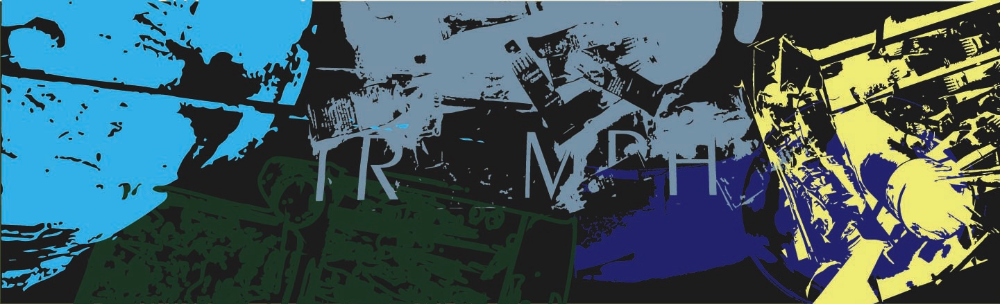

A collection of projects that don't quite fit anywhere else — and maybe that's the point. Some are closer to my studies,
like a coffee bean recommender system, while others came from simply wanting to try something new: a podcast,
a painting, a different way of researching, or a different way of making.
They might look quite different from one another, but I see them as connected by the same curiosity.
I like learning by experimenting with unfamiliar tools and ideas, and seeing where they take me.

Well, if I wanted to put it in corporate terms, I could say I worked across Research & Concept Development, Design & Development, Writing, Illustration & Animation, Editing, and Independent Project Management.
But I think my main role in these projects was much simpler: coming up with an idea and actually finishing it, (more or less) the way I imagined it at the beginning.
These projects range from machine learning and data analysis to writing, editorial design, painting, and videomapping. So, depending on which project we're talking about, the work looks quite different.
The main outcomes are many happy moments, a bit of disbelief, and occasionally wondering why I am actually doing all of these things.
But at least there's one thing I can say for sure: once I start something, I almost always finish it.
 Click to read →
Click to read →
Coffee Bean Recommender
A personal project for an AI & Data Analysis course. Although I’m more of a visual thinker, I think it’s useful to develop some logical and technical skills as well. That’s why I spent a semester exploring data analysis and AI.
As part of the course, we had to create a project using some of the machine learning models we learned about, with the goal of either predicting or generating something.
I am interested in specialty coffee, and I know how difficult it can be to choose between different blends and single origins. When you try something that turns out to be completely different from what you expected, it can be a little disappointing.
So I decided to make something around a subject I already cared about: a coffee bean recommender web app that uses data and machine learning to suggest coffees based on your preferences.
 Click to read →
Click to read →
Mindkét Oldalról Sz. - "Sz" from both sides
A short story collection I wrote, built around fictionalised memories.
The concept was that each story follows a different character, so the illustrations were also created to reflect each character’s personality and style. Because of this, the visual language changes from story to story rather than staying completely consistent throughout the book.
The project became more than just an exercise in storytelling and writing. I also explored editing, illustration, typography, and printing, while learning to work with Adobe tools and Illustrator, which were still quite new to me at the time.
Looking back, the project was a great opportunity to experiment, learn by doing, and turn a collection of stories into something physical.